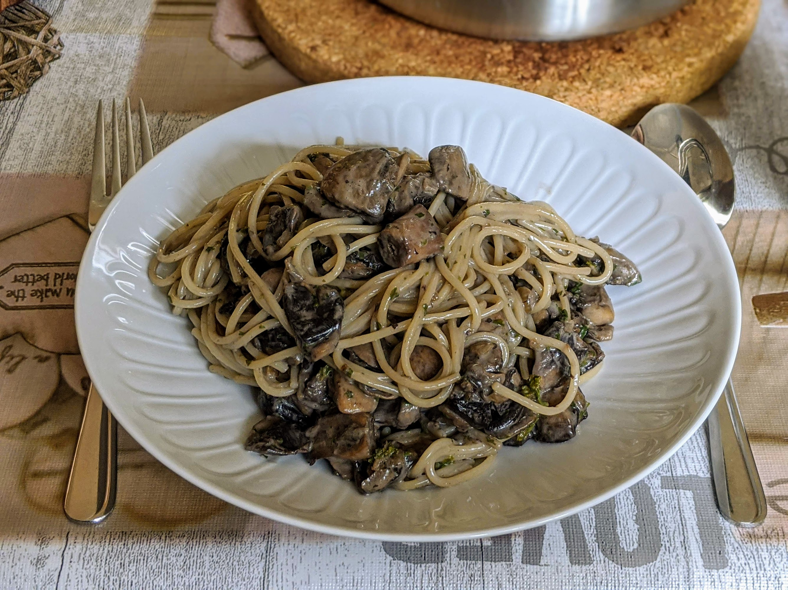

Pâtes aux champignons

Pour 2-3 personnes :
- (Facultatif) Un oignon
- 300-400g de champignons frais
- 20cL de crème liquide
- Une poignée de persil (ou un bouquet d'aneth)
- Sel, poivre, huile d'olive
- Éplucher et émincer l'oignon en petits bouts, le faire revenir au fond d'une poêle dans de l'huile d'olive, à feu moyen-fort.
- Laver ou brosser les champignons, les couper en gros bouts, et les ajouter dans la poêle jusqu'à ce qu'ils réduisent au moins de moitié.
- Pendant ce temps, laver et ciseler le persil, puis l'ajouter dans la poêle en en gardant un peu pour la décoration.
- Lorsque les champignons ont l'air bien cuits, ajouter la crème, et faire mijoter à feu doux. Faire cuire les pâtes pendant ce temps.
- À la fin de la cuisson des pâtes, ajouter une cuillère à soupe d'eau de cuisson des pâtes dans la sauce (l'amidon des pâtes épaissit la sauce et lui permet d'accrocher mieux aux pâtes), puis servir le tout ensemble.
Remarque : cette recette laisse plein de place au goût des champignons, donc ça vaut la peine d'utiliser entre un quart et une moitié de champignons stylés (bolets, pleurotes, shiitake…), le reste de champignons de Paris.
Remarque 2 : on peut aussi utiliser de l'aneth à la place du persil.